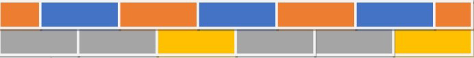
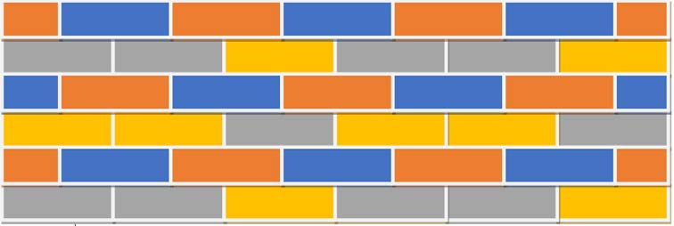

Maelezo ya programu fikivu ya Quorum: Tabaka la kwanza la ukuta lenye matofali ya kijivu na ya njano.
Maelezo ya programu fikivu ya Quorum: Tabaka la kwanza la ukuta lenye matofali ya kijivu na ya njano.Kielelezo namba 15: tabaka la kwanza la ukuta lililopakwa rangi.
4. Chora tabaka la pili juu ya tabaka la kwanza na upake rangi ya machungwa na bluu.
Kielelezo namba 16 kinaonesha au kinabainisha tabaka la pili la ukuta juu ya tabaka la kwanza.

Maelezo ya programu fikivu ya Quorum: Tabaka la kwanza na la pili la ukuta, lenye matofali ya machungwa na bluu juu ya matofali ya kijivu na njano.Kielelezo namba 16: tabaka la kwanza na la pili la ukuta.
5. Endelea kuongeza tabaka hadi ufikie tabaka la sita.
Hakikisha miundo ya rangi katika tabaka inaonekana kama iliyopo kwenye Kielelezo namba 17

Maelezo ya programu fikivu ya Quorum: Ukuta uliokamilika wenye matabaka sita ya matofali ya machungwa, bluu, kijivu na njano.Kielelezo namba 17: ukuta uliokamilika wenye matabaka sita.
Zoezi
1. Taja maumbo unayoweza kuchora kwa kutumia programu ya Paint au Quorum.
2. Andika hatua za kupaka rangi umbo kwa kutumia programu ya Paint au Quorum.
3. Programu ya ‘Paint au Quorum’ haina umbo la mraba. Utafanya nini kuhakikisha unachora umbo la mraba kwa kutumia umbo la mstatili lililopo katika programu ya ‘Paint au Quorum’?